Is Traditional Machine Learning Useless?
Given the Boom of Deep Learning Approaches
INFOTEC
INFOTEC
Aguascalientes, México

INFOTEC
Centro Público de Investigación del Gobierno Federal, que contribuye a la Transformación Digital de México, a través de la investigación, la innovación, la formación académica y el desarrollo de productos y servicios TIC. Sus alcances abarcan al sector público y privado, habilitando caminos que conduzcan hacia un México moderno y de inclusión digital.
INGEOTEC

GitHub: https://github.com/INGEOTEC
WebPage: https://ingeotec.github.io/
Introduction
Definitions
Artificial Intelligence (AI)
Theory and development of computer systems able to perform tasks that normally require human intelligence, such as visual perception, speech recognition, decision-making, and translation between languages.
Machine Learning
Machine learning (ML) is a subfield of artificial intelligence that focuses on the development and implementation of algorithms capable of learning from data without being explicitly programmed.
Natural Language Processing (NLP)
NLP is a branch of artificial intelligence (AI) that uses machine learning and other technologies to enable computers to understand, process, and manipulate human language.
AI Perception
How we look at it

How I see it

Machine Learning
Linear Classifier
Decision Tree
Problem
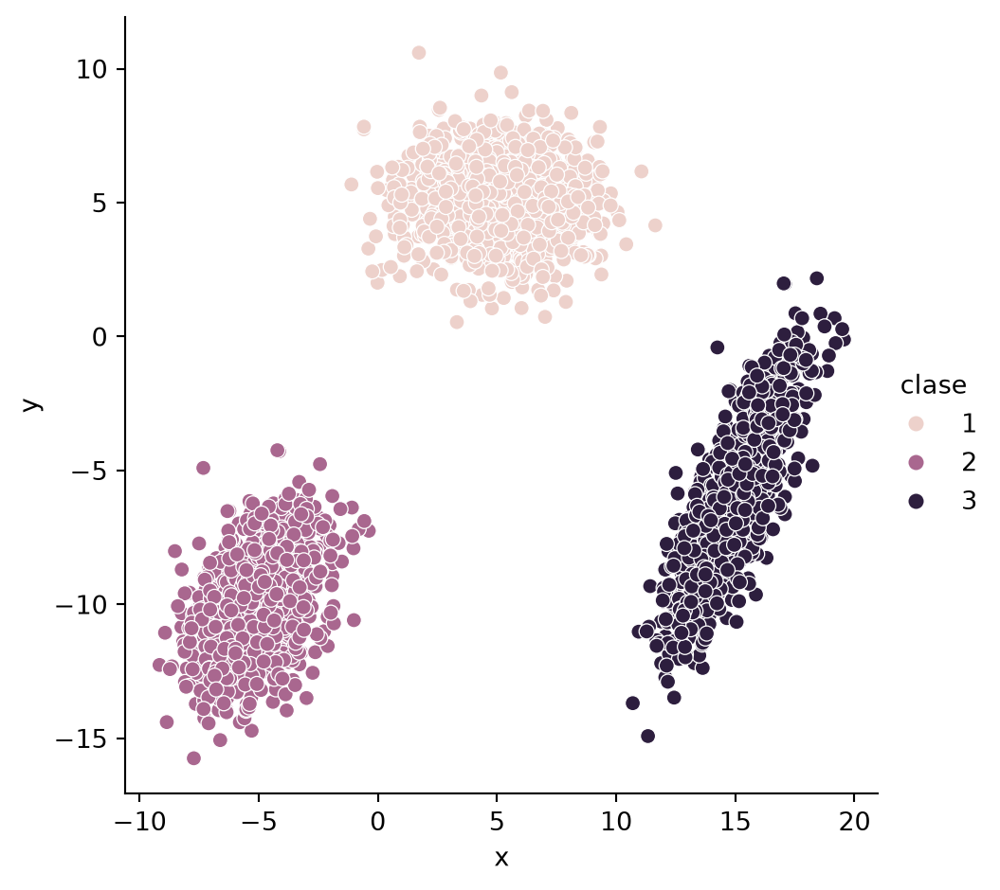
Classifier
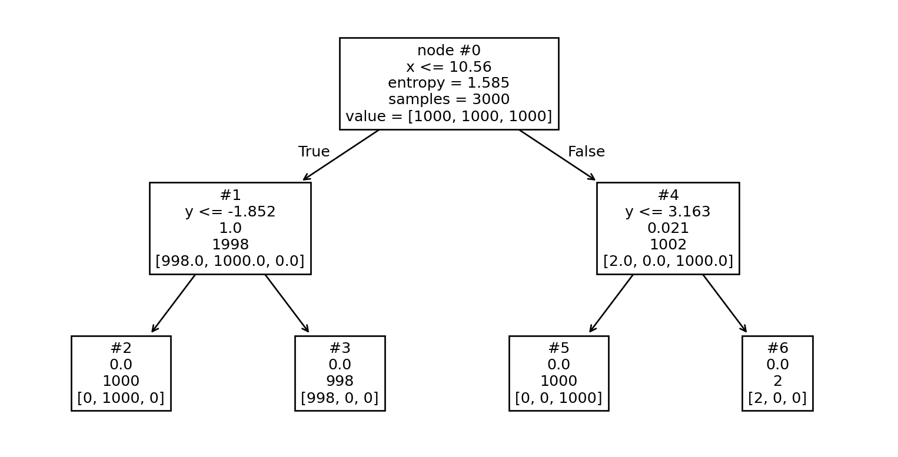
Natural Language Processing
Text Classification
Definition
The aim is the classification of documents into a fixed number of predefined categories.
Polarity
El día de mañana no podré ir con ustedes a la librería
Negative
Training set
https://ingeotec.github.io/Delitos
| texto | etiqueta | |
|---|---|---|
| 0 | Caso hipotético: Un ladrón huye de la policía ... | N |
| 1 | Policías municipales de Querétaro detectaron y... | P |
| 2 | ¡Aunque NO SIRVA! \n\nDescaro, vergüenza. | N |
| 3 | Policía Local de #Fuengirola detiene a un homb... | P |
| 4 | #Policiales // Un hombre de 79 años fue encont... | N |
| 5 | Detenida una mujer por agredir a su pareja en ... | P |
| 6 | Se retoma el juicio al policía Chocobar por ho... | N |
| 7 | Según los informes, el agente recibió un dispa... | P |
Linear Classifier
Text Representation
Bag of Words
Text Representation (2)
Associate token \(t\)
\[ \mathbf{v_t} \in \mathbb R^d \]
Bag of words
\[ \mathbf x = \frac{\sum_t \mathbf{v_t}}{\lVert \sum_t \mathbf{v_t} \rVert} \]
Orthogonal
\[ \forall_{i \neq j} \mathbf{v_i} \cdot \mathbf{v_j} = 0 \]
Consequences
- No similarity between tokens
- High dimension
Text Representation (3)
Document / TFIDF
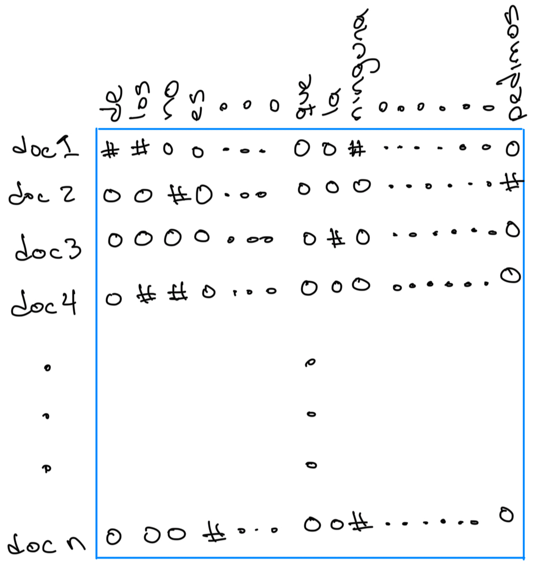
Self-supervised Learning
- Use Cloze test (Bormuth 1968)
Select a token
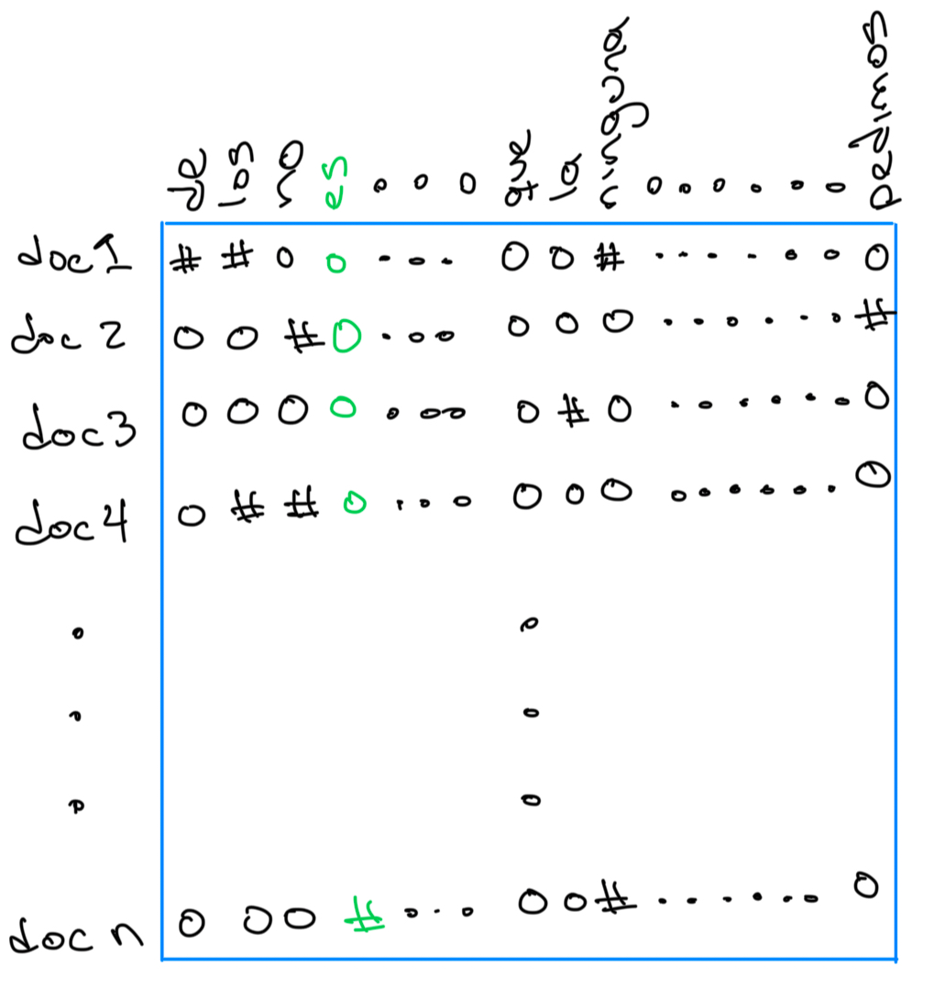
Supervised learning
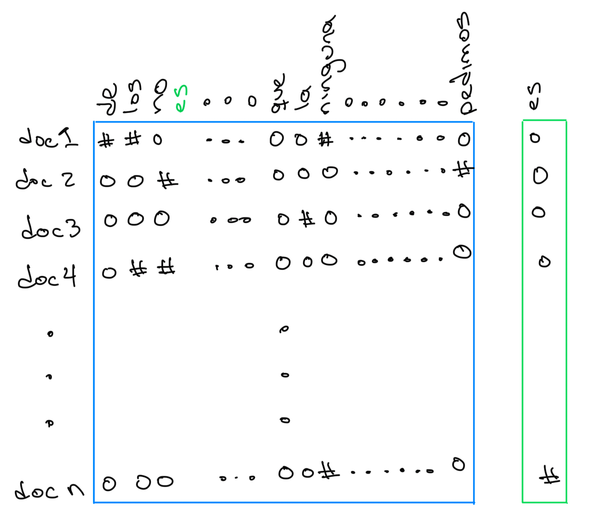
Self-supervised Learning (2)
Classification
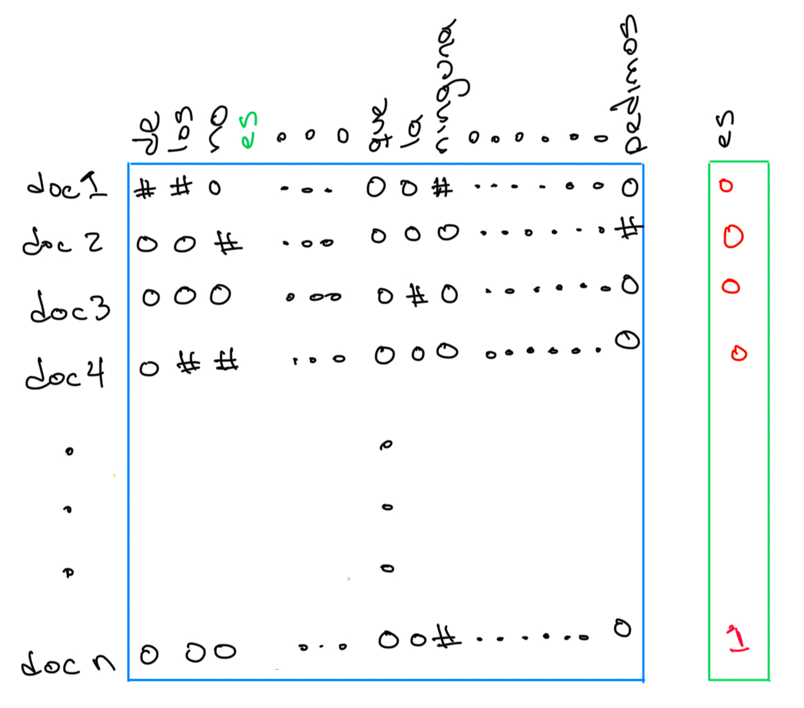
CBOW
- \(\mathbf h = s(A \mathbf x)\)
- \(\mathbf y = s(A_2 \mathbf h)\)
- \(\mathbf x \in \mathbb{R}^d\), \(A \in \mathbb{R}^{(300, d)}\),
- \(\mathbf h \in \mathbb{R}^{300}\), and \(A_2 \in \mathbb{R}^{(d, 300)}\)
Dense representation
- Columns of \(A\)
Self-supervised Learning (3)
Classification
Linear Classifier
- \(y_t = \textsf{sign}(\mathbf w_t \mathbf x)\)
- \(\mathbf x \in \mathbb{R}^d\), \(\mathbf w_t \in \mathbb{R}^d\)
Dense representation
- \(\mathbf w_t\)
- e.g., \(d = 2^{13}\), and \(t=1,\ldots,2^{13}\)
- \(W \approx\) 67M
Self-supervised Learning (4)
Classification
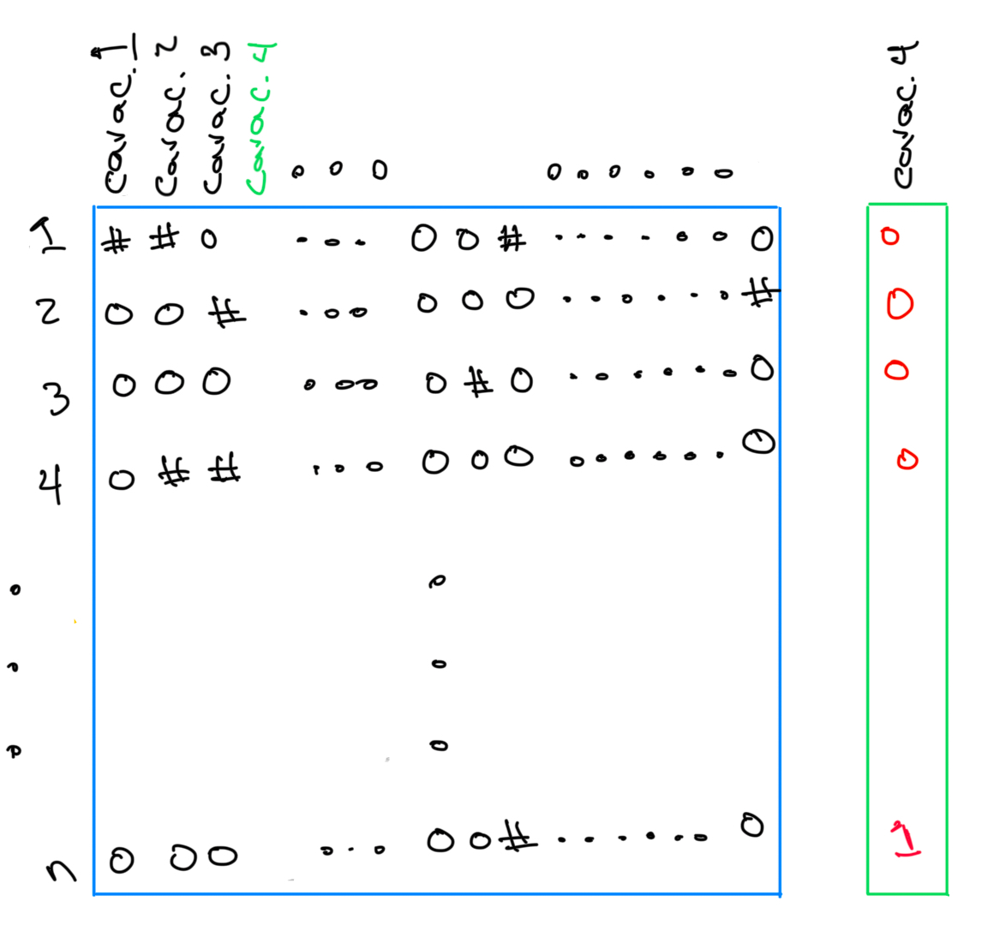
Outside NLP
- Missing values
- High dimension / rare events
Contextual Representation
Attention is All you Need
BERT
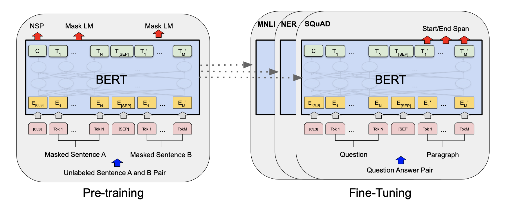
Attention
Equation
\[ \textsf{att}(Q, K, V) = \textsf{softmax}(\frac{QK^\intercal}{\sqrt{d_k}}) V \]
Parts
- \(Q^{(\ell, d_a)} = H^{(\ell, d_h)}Q^{(d_h, d_a)}\)
- \(K^{(\ell, d_a)} = H^{(\ell, d_h)}K^{(d_h, d_a)}\)
- \(V^{(\ell, d_a)} = H^{(\ell, d_h)}V^{(d_h, d_a)}\)
Analysis
- \(W^{(\ell, \ell)} = \textsf{softmax}(\frac{QK^\intercal}{\sqrt{d_k}})\)
- \(\textsf{att}(Q, K, V)^{(\ell, d_a)} = W^{(\ell, \ell)} V^{(\ell, d_a)}\)
- \(H^{(\ell, d_h)} \rightarrow \textsf{att}(Q, K, V)^{(\ell, d_a)}\)
Performance
Author Profiling
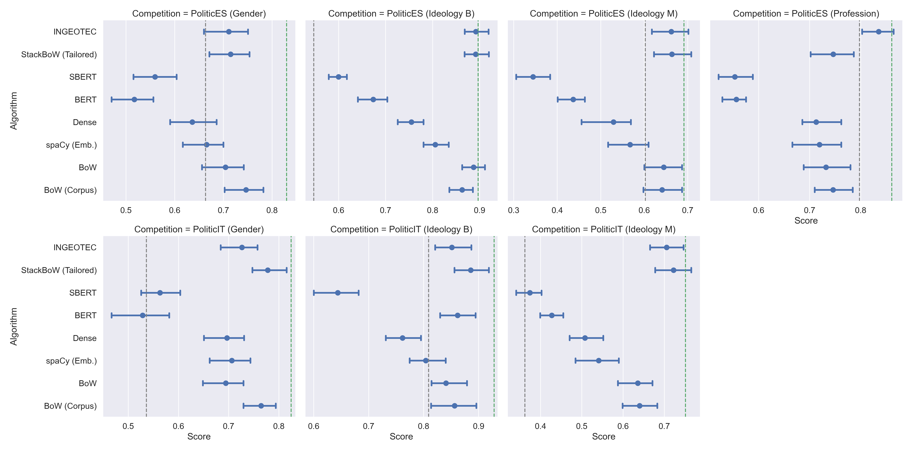
English / Italian
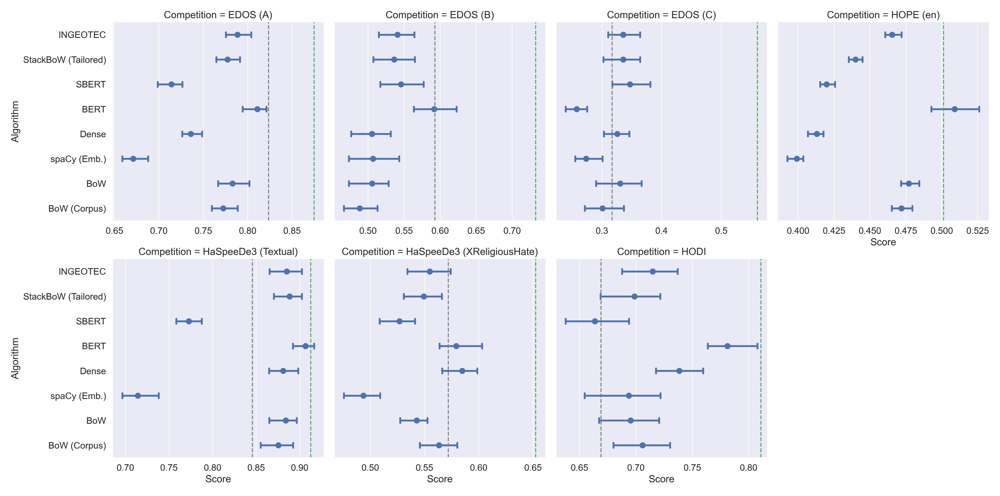
Spanish
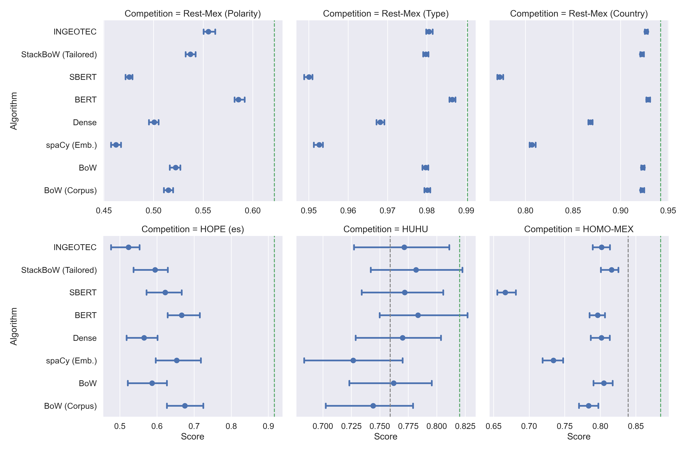
Conclusions
Definiciones
- Artificial Intelligence
- Machine Learning
- Text Classification
- Bag of Words
- Sparse Representation
- Dense BoW
Referencias
Bormuth, John R. 1968. “Cloze Test Readability: Criterion Reference Scores.” Journal of Educational Measurement 5 (3): 189–96.
Devlin, Jacob, Ming-Wei Chang, Kenton Lee, and Kristina Toutanova. 2019. “BERT: Pre-Training of Deep Bidirectional Transformers for Language Understanding.” In Proceedings of the 2019 Conference of the North American Chapter of the Association for Computational Linguistics: Human Language Technologies, Volume 1 (Long and Short Papers), edited by Jill Burstein, Christy Doran, and Thamar Solorio, 4171–86. Minneapolis, Minnesota: Association for Computational Linguistics. https://doi.org/10.18653/v1/N19-1423.
Vaswani, Ashish, Noam Shazeer, Niki Parmar, Jakob Uszkoreit, Llion Jones, Aidan N Gomez, Łukasz Kaiser, and Illia Polosukhin. 2017. “Attention Is All You Need.” In Advances in Neural Information Processing Systems, edited by I. Guyon, U. Von Luxburg, S. Bengio, H. Wallach, R. Fergus, S. Vishwanathan, and R. Garnett. Vol. 30. Curran Associates, Inc. https://proceedings.neurips.cc/paper_files/paper/2017/file/3f5ee243547dee91fbd053c1c4a845aa-Paper.pdf.